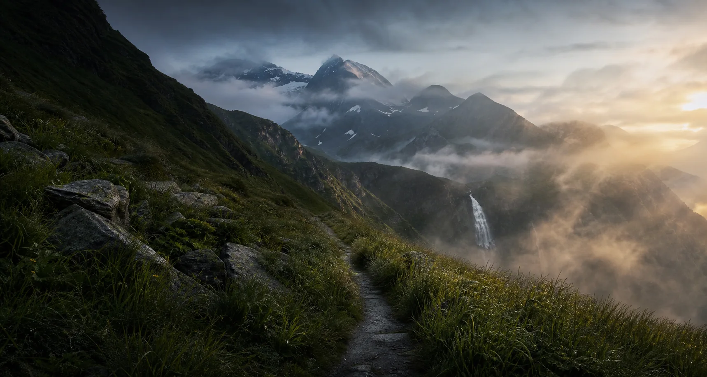

Спорт как основа
Большую часть жизни я занимался единоборствами. Травма остановила привычные тренировки, но не желание двигаться. Я нашёл зал, баскетбол и другие способы не выпадать из жизни.

Мой путь
Я не хочу делать из своих ошибок красивую легенду. Это просто мой маршрут — со сложными решениями, новыми людьми и моментами, когда я снова выбирал двигаться.
Большую часть жизни я занимался единоборствами. Травма остановила привычные тренировки, но не желание двигаться. Я нашёл зал, баскетбол и другие способы не выпадать из жизни.
Мне пришлось уйти из учёбы, когда я выбирался из тяжёлой ситуации. Я не горжусь этим и не советую повторять мой путь без крайней причины. Если можете — учитесь, получайте специальность и не закрывайте перед собой двери.

Я запускаю Mishel8g. Публикую архивы, отвечаю людям, учусь не бояться собственного голоса. Блог становится местом, где я могу быть смешным, серьёзным и неидеальным одновременно.

Я больше думаю о привычках, здоровье и тех, кто рядом. В моей жизни появляются отношения, совместные поездки и спокойная радость от того, что я могу сам оплачивать новый опыт.

В Красной Поляне я впервые проехал серьёзный велосипедный маршрут. Первые десять минут казалось, что мы переоценили силы. А потом был спуск, скорость и мысль: я действительно живу жизнью, о которой мечтал.